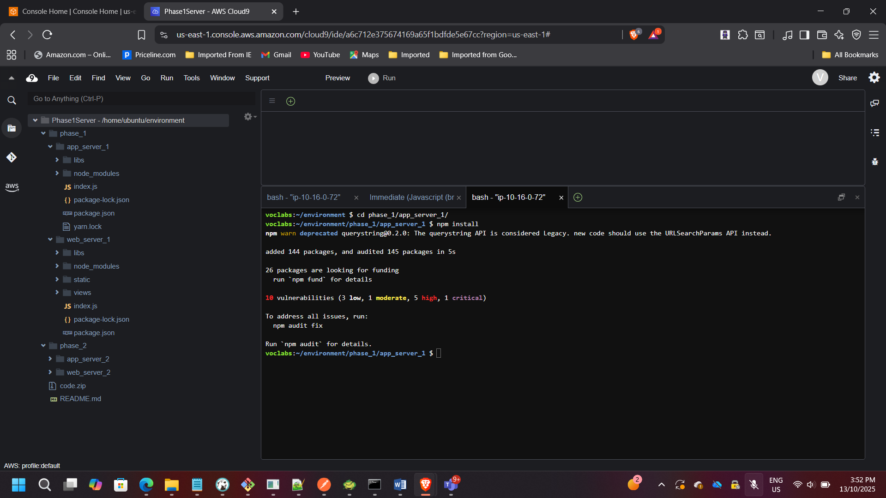
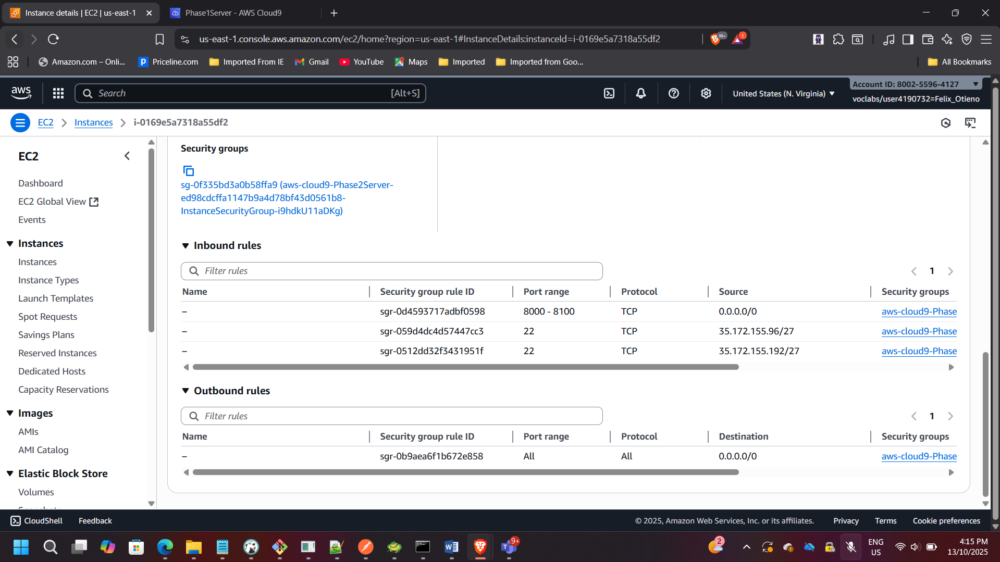
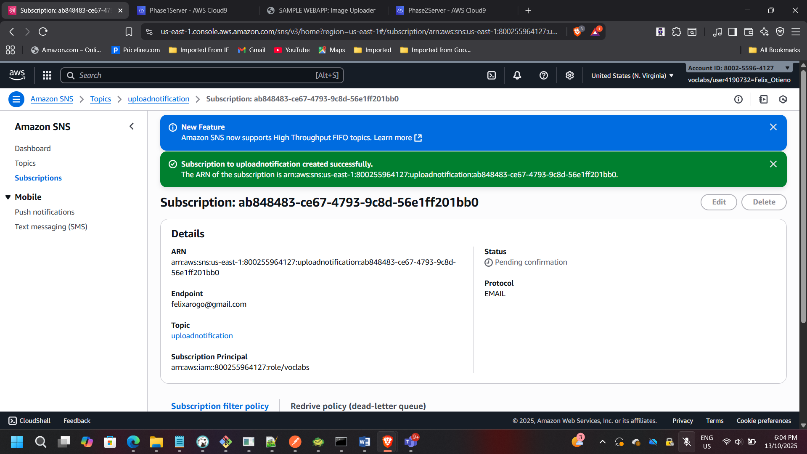
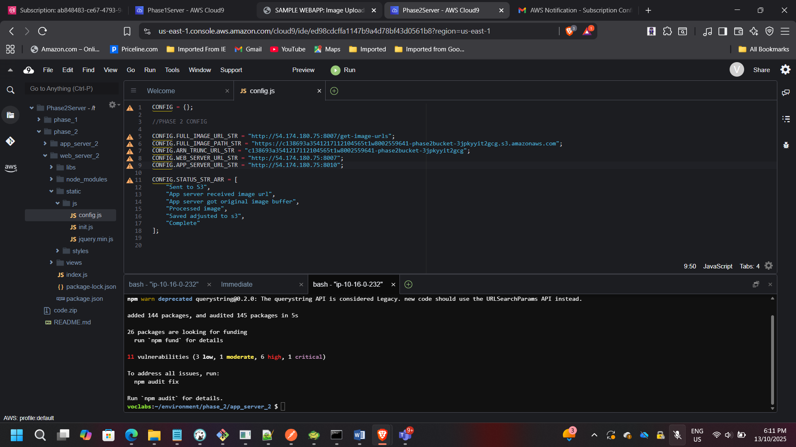
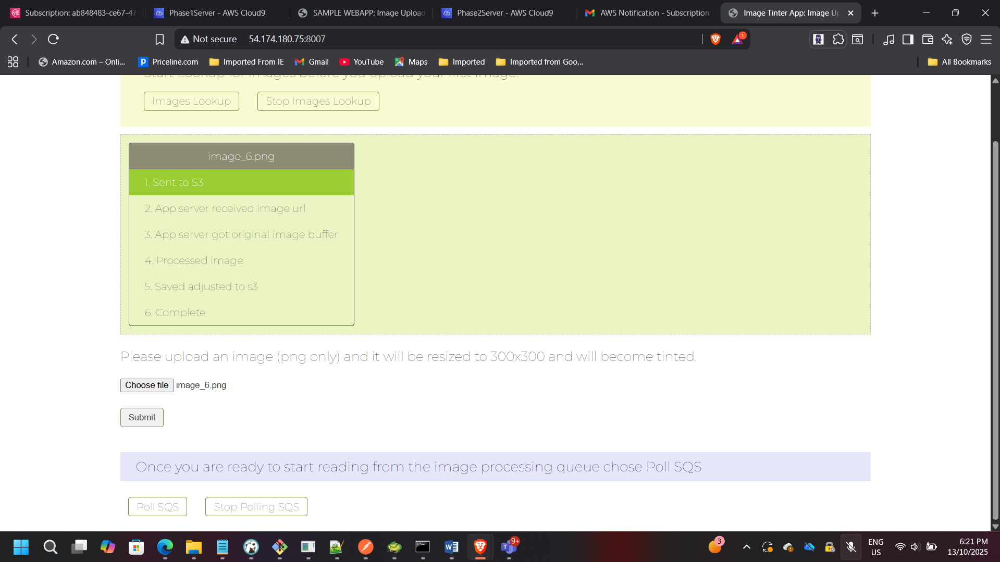
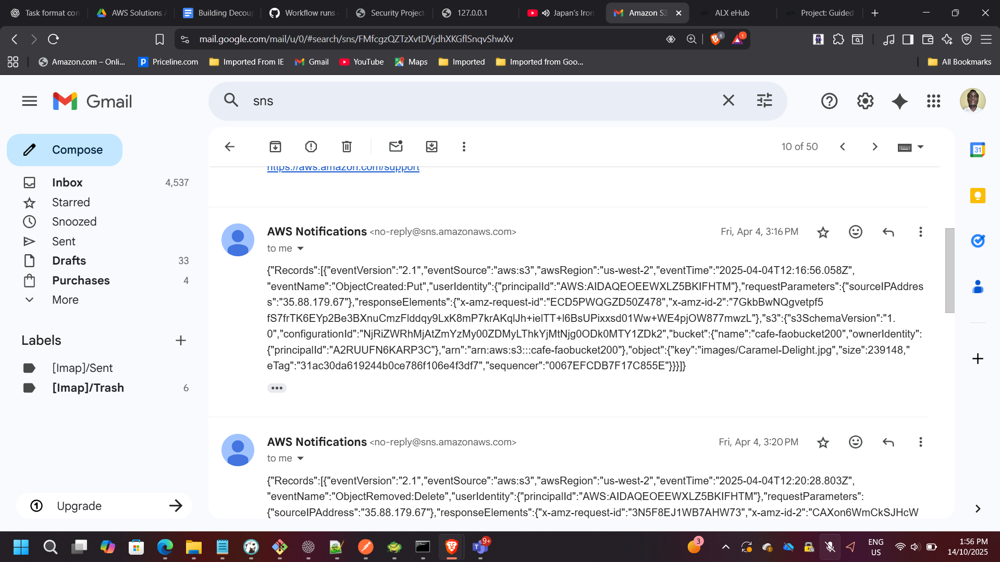
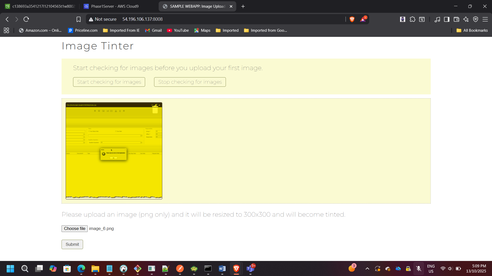

Architecting a Decoupled Event-Driven Image Processing System on AWS
Project: Building a Decoupled Event-Driven Application Using Amazon SQS & SNS
Timeline: September 2025
Role: Solutions Architect (Event-Driven & Distributed Systems Design)
Skills: Amazon SQS, Amazon SNS, Amazon S3 Event Notifications, EC2, Node.js, Asynchronous Processing, Decoupled Architecture, IAM, Fault Tolerance
Executive Summary
Designed and implemented a decoupled, event-driven image processing architecture using Amazon SQS and Amazon SNS.
The project involved:
- Migrating a tightly coupled application into a loosely coupled architecture
- Implementing asynchronous communication using Amazon SQS
- Broadcasting notifications using Amazon SNS
- Configuring S3 event notifications to trigger processing
- Validating improved scalability, fault tolerance, and system resilience
This solution reflects modern cloud-native architectural patterns where services operate independently and communicate through managed messaging services.
Business Problem
The original application used direct communication between:
- Web server (image upload)
- Application server (image processing)
This tight coupling introduced:
- Blocking dependencies
- Reduced scalability
- Single points of failure
- Limited fault tolerance
The goal was to redesign the system into an event-driven architecture where:
- Upload events trigger notifications
- Processing occurs asynchronously
- Components scale independently
- Failures do not cascade across tiers
Phase 1 – Baseline Tightly Coupled Architecture
Initially deployed:
- Web server (port 8008)
- Application server (port 8009)
- Shared S3 bucket for images
📸 Cloud9 – Application Installation & npm Setup 
📸 EC2 Security Group Configuration (Ports 8000–8100) 
📸 Running Image Tinter Application

In this model:
- Web server directly invoked processing
- System depended on immediate availability of processing tier
Phase 2 – Designing the Decoupled Architecture
Architectural Components Introduced
- Amazon SQS → Message Queue
- Amazon SNS → Notification Broadcasting
- Amazon S3 Event Notifications
- Email subscription for monitoring
New flow:
- User uploads image to S3
- S3 triggers SNS topic
- SNS publishes to:
- SQS queue (for processing)
- Email subscription (notification)
- Application server polls SQS
- Image processed asynchronously

Implementing the Decoupled System
Step 1 – Configuring Amazon SQS
Created SQS queue:
- Queue Name: ImageApp
- Default settings
- Copied Queue URL
📸 SQS Queue Details

This queue buffers upload events and decouples upload from processing.
Step 2 – Configuring Amazon SNS
Created SNS topic:
- Topic Name: uploadnotification
- Custom access policy
- Allowed S3 publish permissions
📸 SNS Topic Details

SNS acts as the fan-out mechanism for notifications.
Step 3 – Configuring S3 Event Notifications
Configured:
- Event: All object create events
- Destination: SNS topic
📸 S3 Event Notification Configuration

Now every image upload generates an event.
Step 4 – SNS Subscriptions
Configured:
- SQS subscription
- Email subscription
📸 SQS Subscription to SNS

📸 Email Subscription Confirmation 
This provides:
- Automated processing
- Operational visibility
Step 5 – Updating Application Configuration
Modified:
- Browser tier config
- Web tier config
- Application server config
- Inserted SQS Queue URL
- Inserted S3 bucket references
Started services:
- Web server → port 8007
- Application server → port 8010
📸 Cloud9 – Updated Config Files 
📸 Servers Running on Ports 8007 & 8010

Validating the Event-Driven Flow
Upload Event
User uploads image → triggers SNS → sends email
📸 Image Upload in Browser 
📸 Email Notification – Upload and Processing Events 
Processing Event
Application polls SQS → processes image → sends completion notification
📸 Processed Image Displayed 
Architectural Improvements Achieved
Asynchronous Processing
Uploads no longer block processing tier.
Fault Isolation
If processing server fails:
- Messages remain safely in SQS.
- System resumes when service recovers.
Horizontal Scalability
Multiple processors can poll from SQS simultaneously.
Loose Coupling
Web and application tiers operate independently.
Improved Reliability
Managed AWS messaging services reduce operational overhead.
Enterprise Architecture Impact
This architecture aligns with:
- Event-driven microservices principles
- Distributed systems design
- Cloud-native asynchronous communication
- Resilient application architecture patterns
It demonstrates the ability to:
- Identify coupling issues
- Redesign systems for scalability
- Implement messaging-based communication
- Integrate multiple AWS services coherently
Conclusion
Successfully transformed a tightly coupled image processing application into a decoupled, event-driven architecture using Amazon SQS and Amazon SNS.
The redesign improved:
- Scalability
- Fault tolerance
- Operational resilience
- Asynchronous processing capability
This project demonstrates practical understanding of distributed system design and modern cloud-native messaging patterns.